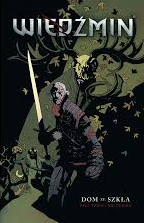
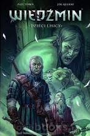
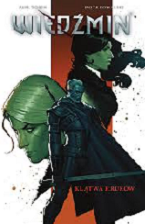
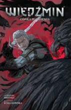

Komiksy opowiadające o histori wiedzmina są najprawdobodobniej najmniej znanym elementem wiedźminskiego uniwersum (no, może nie licząc polskiego serialu ). Seria ta jest wydawana od 2014 roku przez Dark Horse Comic. Aktualnie są dostępne 4 tomu: "Wiedźmin: Dom ze szkła" , "Wiedźmin: Dzieci lisicy", "Wiedźmin: Klątwa kruków" oraz "Wiedźmin: Córka płomienia".
   